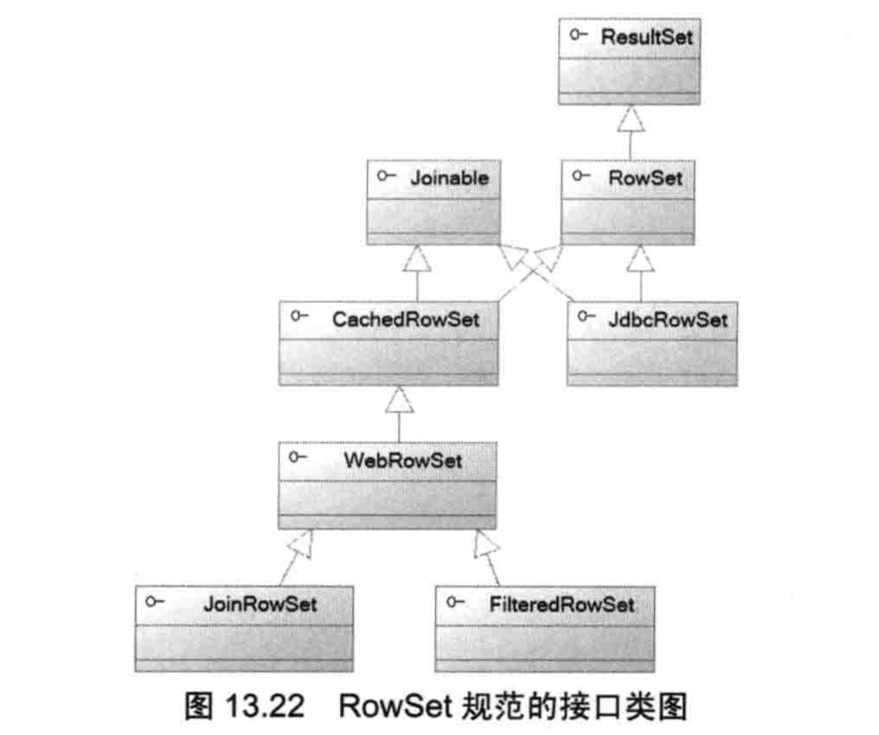

RowSet

当年C#提供了DataSet, 它可以把底层的数据读取到内存中进行离线操作，操作完成后再同步到底层数据源，Java则提供了与此功能类似的RowSet. 与ResultSet相比，RowSet默认是可滚动、可更新、可序列化的结果集, RowSet的子接口如下：
- JdbcRowSet: 保持连接的RowSet，它和一个具有ResultSet.TYPE_SCROLL_INSENSITIVE 和 ResultSet.CONCUR_UPDATABLE的ResultSet功能相当
- CachedRowSet: 断开连接的RowSet，以缓存的方式实现离线的数据集操作
- FilteredRowSet: 可通过过滤条件得到数据集的子集的RowSet，继承自WebRowSet。Predicate是过滤器接口
- JoinRowSet: 对数据集进行Join连接查询得到的RowSet，继承自WebRowSet。 它和SQL语句的join操作效果类似
- WebRowSet: 可与XML互相转换的RowSet，继承自CachedRowSet。有点类似ORM的意思，不同的是它为XML和Relation Data之间提供映射。
除了JdbcRowSet需要保持与数据库的连接之外，其余4个子接口都是离线的RowSet，无须保持与数据库的连接。
对于离线RowSet而言，程序在创建RowSet时已把数据从底层数据库读取到了内存，因为可以充分利用计算机的内存，从而降低数据库服务器的负载，提高程序性能。
对于以上接口，Java6.0提供了实现类：
- JdbcRowSetImpl
- CachedRowSetImpl
- WebRowSetImpl
- FilteredRowSetImpl
- JoinRowSetImpl
以JdbcRowSet为例，构造器：
- JdbcRowSetImp()
- JdbcRowSetImpl(Connection conn) // 如果传入了Connection，就不必填写url, user, password等
- JdbcRowSetImpl(ResultSet rs)
常用方法：
- setUrl(String url)
- setUsername(String name)
- setPassword(String password)
- setCommand(String sql): 设置sql语句
- execute(): 执行查询
- populate(ResultSet rs): 使用ResultSet填充RowSet
由上可知，填充JdbcRowSet数据有两种方式：
- JdbcRowSetImpl(ResultSet rs) 通过构造器传入ResultSet
- populate(ResultSet rs): 使用ResultSet填充RowSet
JdbcRowSetImpl方法，官网
使用JdbcRowSetImpl示例：
<!-- pom.xml -->
<dependencies>
<dependency>
<groupId>mysql</groupId>
<artifactId>mysql-connector-java</artifactId>
<version>5.1.47</version> <!--使用8.x的驱动出现问题，驱动bug-->
</dependency>
</dependencies>
// -- MySqlInfo.java --
public class MySQLInfo {
// public static String driver ="com.mysql.cj.jdbc.Driver"; // 使用8.x版本驱动
public static String driver ="com.mysql.jdbc.Driver"; // 使用老版本驱动，比如5.1.47
public static String url = "jdbc:mysql://127.0.0.1:3306/daliu?characterEncoding=utf-8&useSSL=false";
public static String user = "root";
public static String pass = "daliu8807";
}
// -- JdbcRowSetTest.java --
import com.sun.rowset.JdbcRowSetImpl;
import javax.sql.rowset.JdbcRowSet;
import java.sql.Connection;
import java.sql.DriverManager;
public class JdbcRowSetTest {
public void update(String sql) throws Exception {
Class.forName(MySQLInfo.driver);
try (
Connection conn = DriverManager.getConnection(MySQLInfo.url, MySQLInfo.user, MySQLInfo.pass);
JdbcRowSet rowSet = new JdbcRowSetImpl(conn);
)
{
rowSet.setCommand(sql);
// 查询
rowSet.execute();
rowSet.afterLast();
// 向前滚动结果集
while (rowSet.previous()) {
System.out.println(rowSet.getString(1) + "\t"
+ rowSet.getString(2) + "\t"
+ rowSet.getString(3) + "\t"
+ rowSet.getString(4));
if (rowSet.getInt("id") == 2) {
// 修改指定记录行
/**
* 坑：
* 在使用驱动mysql-connector-java 8.x版本时发现运行updateXxx抛出异常
* https://stackoverflow.com/questions/56090869/java-sql-sqlexception-resultset-is-not-updatable-with-jdbcrowset
* 因此把驱动版本改为老的：<version>5.1.47</version> 之后，程序正常运行
* 查看底层数据发现修改成功
*/
rowSet.updateString("name", "刘大威");
rowSet.updateFloat("score", 99.9f);
rowSet.updateRow(); // 同步修改到底层数据库
}
}
}
}
public static void main(String[] args) throws Exception {
JdbcRowSetTest manage = new JdbcRowSetTest();
manage.update("select * from student");
}
}
Java 7新增了RowSetProvider和RowSetFactory接口，其中RowSetProvider负责创建RowSetFactory, 而RowSetFactory则提供了如下方法创建RowSet实例：
- CachedRowSet createCachedRowSet()
- FilteredRowSet createFilteredRowSet()
- JdbcRowSet createJdbcRowSet()
- JoinRowSet createJoinRowSet()
- WebRowSet createWebRowSet()
通过这种方式把应用程序与RowSet实现分离开，避免直接使用JdbcRowSetImpl。
上面的JdbcRowSetTest.java可改为：
...
Class.forName(MySQLInfo.driver);
RowSetFactory factory = RowSetProvider.newFactory();
try (JdbcRowSet rowSet = factory.createJdbcRowSet()) {
rowSet.setUrl(MySQLInfo.url);
rowSet.setUsername(MySQLInfo.user);
rowSet.setPassword(MySQLInfo.pass);
rowSet.setCommand(sql);
// 查询
rowSet.execute();
...
离线RowSet
在直接使用ResultSet的时代，程序查询得到ResultSet之后必须立即读取或处理它对应的记录，否则一旦Connection关闭，再去通过ResultSet读取记录就会引发异常。
假设程序分为数据访问层和视图显示层，处理方式一般有两种：
- 迭代访问ResultSet > 每行转换成一个Java Bean > 将多个Java Bean封装成一个List > 关闭Connection > 传到视图层 ---- 缺点：编程烦琐，要在关闭前撸好代码
- 直接将ResultSet传到视图层 ---- 缺点：要求当视图显示层显示数据时，底层Connection必须一直处于打开状态
使用离线RowSet就可以“优雅”的处理上面的问题:
<!-- pom.xml -->
<dependency>
<groupId>mysql</groupId>
<artifactId>mysql-connector-java</artifactId>
<!-- <version>5.1.47</version> -->
<version>8.0.17</version>
</dependency>
// -- MySQLInfo.java --
public class MySQLInfo {
public static String driver ="com.mysql.cj.jdbc.Driver"; // 使用8.x版本驱动
// public static String driver = "com.mysql.jdbc.Driver"; // 使用老版本驱动，比如5.1.47
public static String url = "jdbc:mysql://127.0.0.1:3306/daliu?characterEncoding=utf-8&useSSL=false";
public static String user = "root";
public static String pass = "daliu8807";
}
// -- CachedRowSetTest.java --
import javax.sql.rowset.CachedRowSet;
import javax.sql.rowset.RowSetFactory;
import javax.sql.rowset.RowSetProvider;
import java.sql.*;
public class CachedRowSetTest {
public CachedRowSet query(String sql) throws Exception {
Class.forName(MySQLInfo.driver);
Connection conn = DriverManager.getConnection(MySQLInfo.url, MySQLInfo.user, MySQLInfo.pass);
Statement stmt = conn.createStatement();
ResultSet resultSet = stmt.executeQuery(sql);
RowSetFactory factory = RowSetProvider.newFactory();
CachedRowSet cachedRowSet = factory.createCachedRowSet();
cachedRowSet.populate(resultSet); // 使用ResultSet填充CachedRowSet
// 这里手动关闭资源，为了显示CachcedResultSet在connection关闭后仍然可以正常使用
// 实际开发中建议放在try中自动释放
resultSet.close();
stmt.close();
conn.close();
return cachedRowSet;
}
public static void main(String[] args) throws Exception {
CachedRowSetTest manage = new CachedRowSetTest();
CachedRowSet cachedRowSet = manage.query("select * from student");
cachedRowSet.afterLast();
while (cachedRowSet.previous()) {
for (int i = 0; i < cachedRowSet.getMetaData().getColumnCount(); i++) {
System.out.print(cachedRowSet.getString(i+1) + "\t");
}
System.out.println();
if (cachedRowSet.getInt("id") == 4) {
cachedRowSet.updateString("name", "唐僧");
cachedRowSet.updateRow();
}
}
try(Connection conn = DriverManager.getConnection(MySQLInfo.url, MySQLInfo.user, MySQLInfo.pass)) {
conn.setAutoCommit(false);
// 把在内存中修改的CachedRowSet同步到底层数据库
cachedRowSet.acceptChanges(conn);
} catch (SQLException ex) {
System.out.print("连接失败");
ex.printStackTrace();
}
}
}
离线RowSet的分页查询
- populate(ResultSet rs, int startRow): 使用ResultSet填充RowSet, 从ResultSet的第startRow条记录开始装填，最小从1开始
- setPageSize(int pageSize)
- previousPage()
- nextPage()
<!-- pom.xml -->
<dependencies>
<dependency>
<groupId>mysql</groupId>
<artifactId>mysql-connector-java</artifactId>
<!-- <version>5.1.47</version>-->
<version>8.0.17</version>
</dependency>
</dependencies>
// -- MySQLInfo.java --
public class MySQLInfo {
public static String driver ="com.mysql.cj.jdbc.Driver"; // 使用8.x版本驱动
// public static String driver = "com.mysql.jdbc.Driver"; // 使用老版本驱动，比如5.1.47
public static String url = "jdbc:mysql://127.0.0.1:3306/daliu?characterEncoding=utf-8&useSSL=false";
public static String user = "root";
public static String pass = "daliu8807";
}
// -- CachedRowSetPage.java --
import javax.sql.RowSet;
import javax.sql.rowset.CachedRowSet;
import javax.sql.rowset.RowSetFactory;
import javax.sql.rowset.RowSetProvider;
import java.sql.*;
public class CachedRowSetPage {
public CachedRowSet query(String sql, int page, int pageSize) throws Exception {
Class.forName(MySQLInfo.driver);
try (
Connection conn = DriverManager.getConnection(MySQLInfo.url, MySQLInfo.user, MySQLInfo.pass);
Statement stmt = conn.createStatement();
ResultSet resultSet = stmt.executeQuery(sql);
) {
RowSetFactory factory = RowSetProvider.newFactory();
CachedRowSet rowSet = factory.createCachedRowSet();
rowSet.setPageSize(pageSize); // 每页显示pageSize条记录
rowSet.populate(resultSet, (page-1) * pageSize + 1); // 设置从第几条记录开始
return rowSet;
}
}
public static void main(String[] args) throws Exception {
CachedRowSetPage manage = new CachedRowSetPage();
// 第3页，第页2条
CachedRowSet rowSet = manage.query("select * from student", 3, 2);
manage.printAll(rowSet);
}
public void printAll(RowSet rowSet) {
try {
ResultSetMetaData resultSetMetaData = rowSet.getMetaData();
int columnCount = resultSetMetaData.getColumnCount();
while (rowSet.next()) {
// 依次输出每列的值
for (int i = 0; i < columnCount; i++) {
System.out.print(rowSet.getString(i+1) + "\t");
}
System.out.print("\n");
}
} catch (SQLException ex) {
System.out.println("print data error");
ex.printStackTrace();
}
}
}